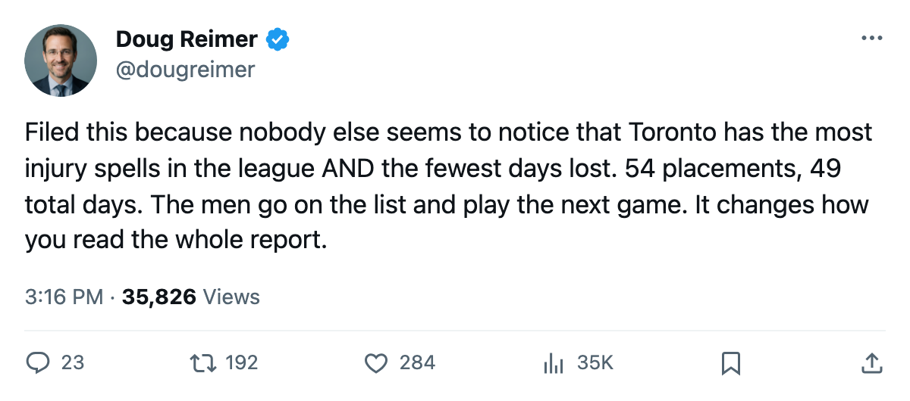
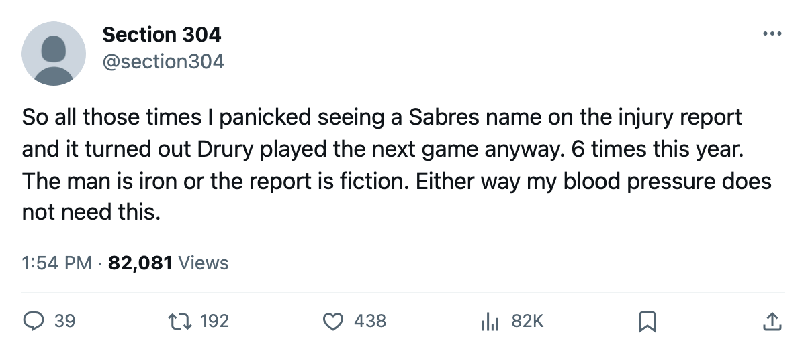

0.9 Days Per Spell: The Injured List That Never Empties a Lineup
Bryce Salvador went on injured reserve 8 times for St. Louis and played 61 of 61 games. A ratio the league never publishes tells you which clubs lose hockey when a man goes on the IR and which lose a roster designation for an afternoon.

 Chris Drury86 went on injured reserve 6 times this season. He has played 59 of 59 Buffalo games. His longest absence between designated spells is 0 days; his placements come and go within a calendar day, and the Sabres never once dropped a man from the lineup because of a line on the injury report.
Chris Drury86 went on injured reserve 6 times this season. He has played 59 of 59 Buffalo games. His longest absence between designated spells is 0 days; his placements come and go within a calendar day, and the Sabres never once dropped a man from the lineup because of a line on the injury report.
Plenty of clubs do this. I divided every club's total designated spells by its total days lost, the ratio that measures how long an IR placement actually keeps a man out. The range across the league runs from 0.9 days at Toronto to 13.1 at Tampa Bay and Pittsburgh. The same document, a player's name on the injured list, means a different thing depending on who files it.
The ratio, ranked
Nine clubs have been sampled by the method below. The full league appears in the table, with raw spells and days from the Bureau's injury ledger.
| club | spells | days lost | days per spell |
|---|---|---|---|
 Toronto Maple Leafs Toronto Maple Leafs | 54 | 49 | 0.9 |
 St. Louis Blues St. Louis Blues | 25 | 75 | 3.0 |
 Colorado Avalanche Colorado Avalanche | 27 | 81 | 3.0 |
 Edmonton Oilers Edmonton Oilers | 24 | 136 | 5.7 |
 Boston Bruins Boston Bruins | 44 | 335 | 7.6 |
 Vancouver Canucks Vancouver Canucks | 41 | 336 | 8.2 |
 Detroit Red Wings Detroit Red Wings | 40 | 353 | 8.8 |
 Tampa Bay Lightning Tampa Bay Lightning | 42 | 550 | 13.1 |
 Pittsburgh Penguins Pittsburgh Penguins | 39 | 510 | 13.1 |
At the bottom, Toronto Maple Leafs carries the most designated spells in hockey, 54, and loses less than 1 day per spell. St. Louis and Colorado sit at 3.0. At the top, Tampa Bay and Pittsburgh lose over 13 days every time they place a man. The ratio is a measure of severity, or of caution in activation, or of the kind of injuries a medical staff is actually treating. Whatever it measures, it separates the league into two groups with almost nothing in common.
The men who never left
A player with 4 or more designated spells who still played every game for his club tells you the ratio in human form. I filtered the full injury ledger against games played and pulled everyone whose spell count exceeds 3 and whose games played equals his club's total.
| player | club | position | spells | gp | team gp | games missed |
|---|---|---|---|---|---|---|
 Simon Gagne86 Simon Gagne86 |  Philadelphia Flyers Philadelphia Flyers | LW | 6 | 60 | 60 | 0 |
| Chris Drury |  Buffalo Sabres Buffalo Sabres | LW | 6 | 59 | 59 | 0 |
 Trevor Linden83 Trevor Linden83 | Vancouver Canucks | RW | 5 | 60 | 60 | 0 |
 Sean Burke88 Sean Burke88 |  Phoenix Coyotes Phoenix Coyotes | G | 5 | 60 | 60 | 0 |
 Brett Hull77 Brett Hull77 | Detroit Red Wings | RW | 4 | 60 | 60 | 0 |
Gagne, Drury, Linden, Burke, and Hull went on the injured list between 4 and 6 times and never once missed a game. At Vancouver Canucks, which loses 8.2 days per spell league-wide, Linden's 5 produced zero. The days-per-spell ratio measures the club's roster construction: how many spare bodies it has, how many games a star can miss before the drop-off becomes visible, and whether the medical staff clears players the same day they file.
What Tampa Bay and Pittsburgh look like
At the other end of the ratio, Tampa Bay's 42 spells keep men out for over two weeks at a time.  Vincent Lecavalier91 played 59 of Tampa Bay Lightning's 61 games.
Vincent Lecavalier91 played 59 of Tampa Bay Lightning's 61 games.  Nikolai Khabibulin92 played 53 of 61. At Pittsburgh Penguins,
Nikolai Khabibulin92 played 53 of 61. At Pittsburgh Penguins,  Mario Lemieux89 carried 5 spells and played 51 of 60. These clubs have genuine medical crises. The same number of names on the IR produces 10 times the lost time.
Mario Lemieux89 carried 5 spells and played 51 of 60. These clubs have genuine medical crises. The same number of names on the IR produces 10 times the lost time.
Tampa Bay's 550 days lost is the highest total in the league. Pittsburgh's 510 is second. No other pair of clubs comes close to that combined total.
The trade deadline, in 24 days
What the calendar has as the trade deadline falls 24 days from today. Clubs buying depth will read the injury report and ask the obvious question: is this man actually out, or is he going to be back tomorrow? The days-per-spell ratio answers it at the club level. A buyer looking at a St. Louis Blues player on the IR knows that the placement likely cost the Blues 3 days or less. A buyer looking at a Tampa Bay Lightning player knows it likely cost 13.
Chicago GM Jason Hughes told The Tunnel's Jan Kowalczyk after a recent game that his club sits at 50 points and is listening on both sides.
"We're listening to everyone. Every call that comes in gets returned," Hughes said. "I'm not sitting back waiting for somebody to call me with a fire-sale offer on a piece I want to keep."
The misread
The league's injury ledger, as published, counts spells. It reports the number of times a man's name appears on the list. Toronto files more names than any other club and loses the least time. A club that reads only the spell column ranks Toronto's medical situation as the league's worst. A club that reads days lost ranks it 30th.
Toronto Maple Leafs carries 54 designated spells. The total time those spells removed a player from the lineup: 49 days. The Maple Leafs play the same lineup Monday that they named Saturday, regardless of who went on the list in between.
The Development Index and the Book both grade players on current form, and form accounts for what a player does when he plays. Neither one accounts for a club that systematically keeps its men available while appearing, on paper, to be in crisis.

